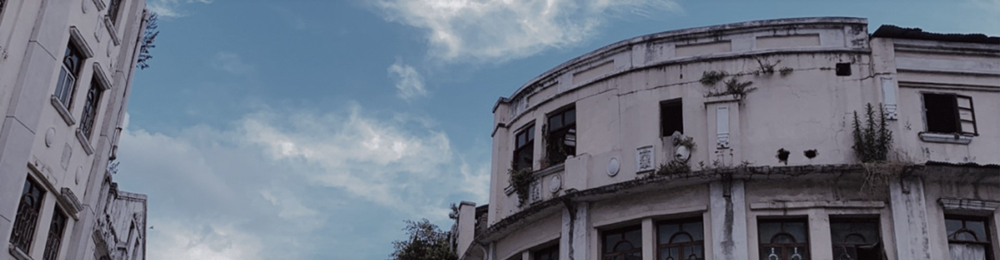
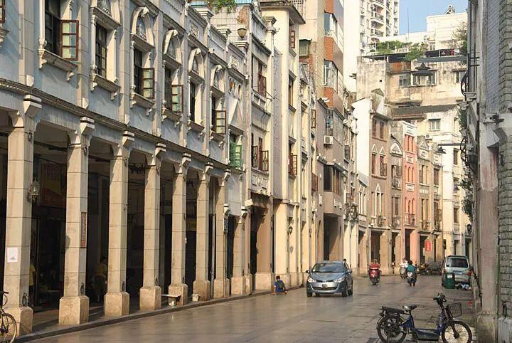
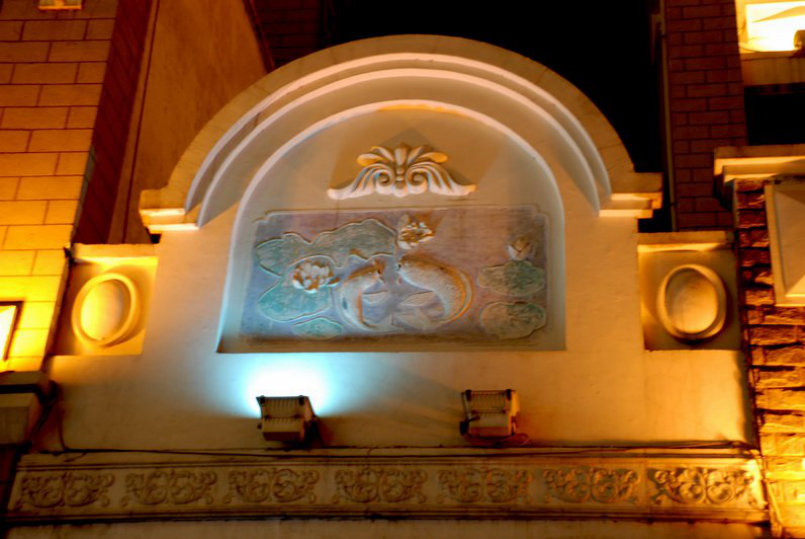
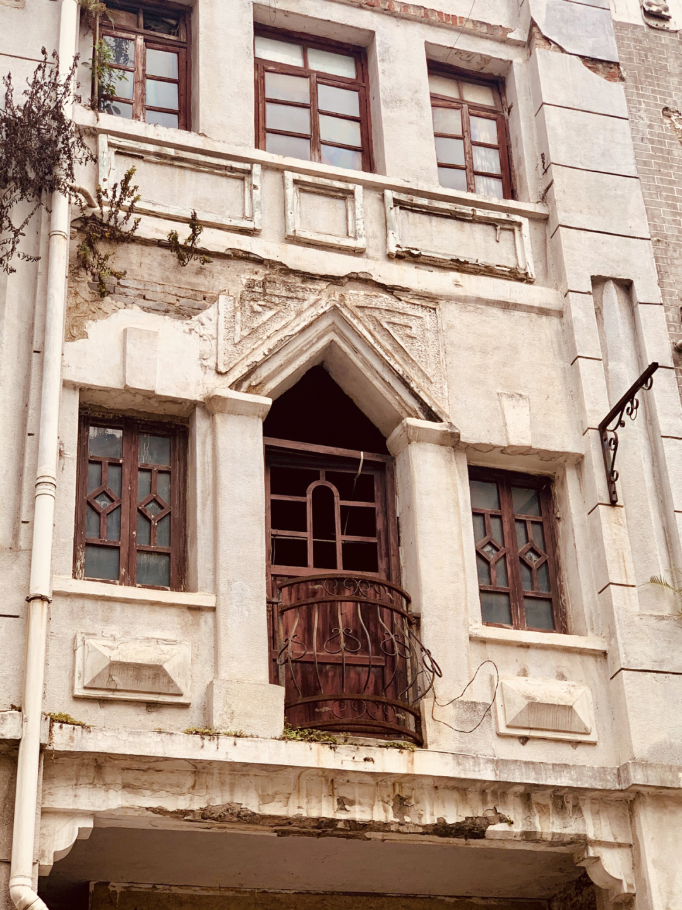
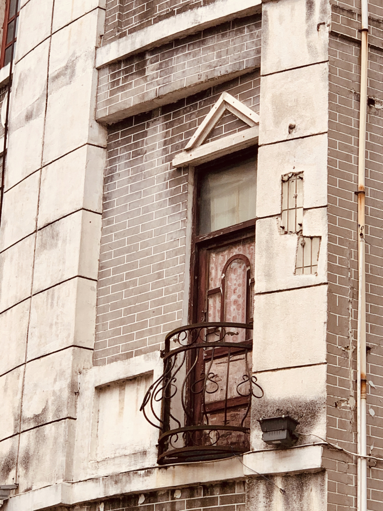
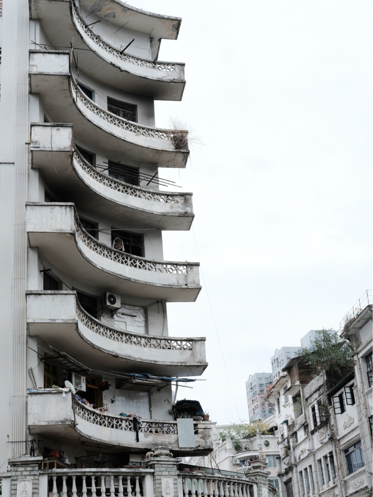

梧州地处岭南，北回归线经过其间，旧时为了结合南方潮湿多雨及多洪易涝的气候特点，梧州建筑多采用骑楼形式，主要是前铺后宅，下铺上宅、住商合一。由于梧州是广西最早的港口开放城 市，受外来经济文化影响大，所以骑楼的西化痕迹也较浓，如罗马柱、圆拱形窗、穹雕等等，都是典型的西方建筑语言。

在骑楼的外观上，可以看到许多有代表性的中国建筑语言:花窗、砖雕、牌坊等，都十分精巧。在大南路骑楼城墙上，一幅浮雕为“连年有余”，莲池下面游着两只鲤鱼。另一幅浮雕展示的是一棵松树下有四只白鹤，其寓意为“松鹤长春”;有寓意为“平平安安”的宝瓶,在龙母太庙广场的雕刻上有“鲤鱼跳龙门”等等。


花窗

铁栏观景阳台

香蕉楼
南环路街景
小南路街景
版权所有 ©会两下小组 2021
素材来源 |图片：百度图片 小红书用户IVY 小红书用户一只野生的面包菌
文章：百度百科 梧州骑楼简史